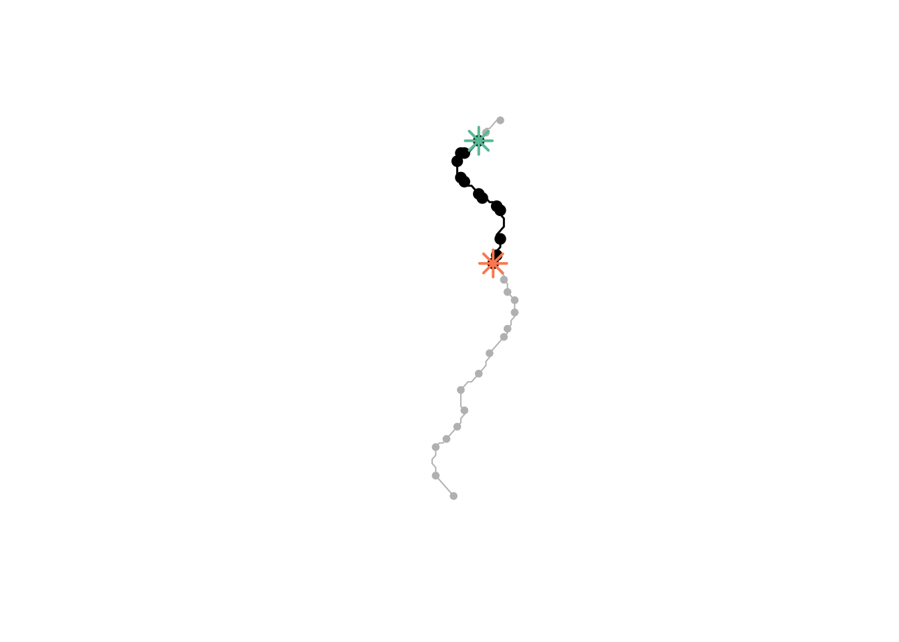
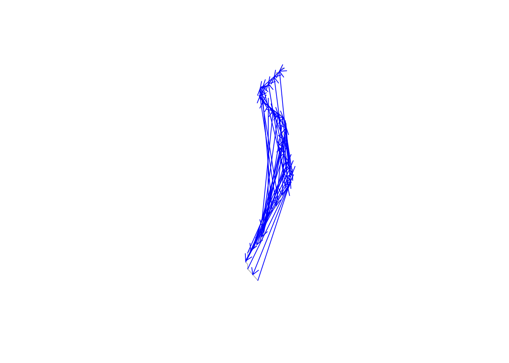

library(sfnetworks)
library(sf)
library(tidygraph)
library(dplyr)
library(purrr)
library(TSP)river_connection_directional
Load Libraries
Load data
trial_river <- readRDS(here::here("data", "cleaned", "trial_river_cleaned.rds"))Transform data to sfnetwork type and calculates edge weights
- Spatial networks have 2 data tables:
- Nodes (junctions/endpoints)
- Edges (line connecting points)
- Create another column: `weight` for river segment distance
direction = TRUEmeans flow can only do in the direction the line geometeries are drawn (downstream only). Should align with flow direction in HydroRIVERS- df’s
next_down- each segment points to its downstream neighbor - For downstream-only paths: This now enforces that paths only follow the direction of line geometries (downstream). A path from upstream→downstream will work, but downstream→upstream won’t find a route.
- df’s
net <- as_sfnetwork(trial_river, direction = TRUE) %>% # convert river geom into spatial network
activate("edges") %>% # "Next operation applied to edges table (not node table)"
mutate(weight = edge_length()) # calculate spatial length of each edge (river segment)
net_df <- as_tibble(net) # makes sfnetwork a df Direction: When you call net, it says ‘A rooted tree’ which means its directed (a tree structure has a root and flows one way).
Code
net# A sfnetwork with 30 nodes and 29 edges
#
# CRS: EPSG:3857
#
# A rooted tree with spatially explicit edges
#
# Edge data: 29 × 19 (active)
from to hyriv_id next_down main_riv length_km dist_dn_km dist_up_km
<int> <int> <int> <int> <int> <dbl> <dbl> <dbl>
1 1 2 40746330 40746814 41067217 2.51 1469. 108.
2 2 3 40746814 40747465 41067217 1.23 1468 109.
3 4 5 40747463 40747949 41067217 0.410 1465. 112.
4 3 4 40747465 40747463 41067217 2.26 1466. 111.
5 5 6 40747949 40748974 41067217 1.08 1464. 113.
6 6 7 40748974 40749223 41067217 2.01 1462. 114.
# ℹ 23 more rows
# ℹ 11 more variables: catch_skm <dbl>, upland_skm <dbl>, endorheic <int>,
# dis_av_cms <dbl>, ord_stra <int>, ord_clas <int>, ord_flow <int>,
# hybas_l12 <dbl>, shape_length <dbl>, geometry <LINESTRING [m]>, weight [m]
#
# Node data: 30 × 1
geometry
<POINT [m]>
1 (9311180 3338311)
2 (9309324 3336725)
3 (9308397 3335667)
# ℹ 27 more rowsDefine path
Shortest path from node # (3) to # (15) using
weightcolumn- Would count edges [fewest segments] instead of distance if not
weight - # = Node IDs (row number in nodes table)
- Would count edges [fewest segments] instead of distance if not
Returns: list of nodes that are the shortest path/route (EX:
[3, 7, 12, 15]= path goes thru nodes 3→7→12→15)Direction (checking if it worked)
paths_downreturns a valid pathpaths_upis invalid and returns a warning!
# Define path: find shortest path from node 3 and 15 using weight column
paths_down = st_network_paths(net, from = 3, to = 15, weight = "weight") # Define path: find shortest path from node 15 and 3 (UPSTREAM)
paths_up = st_network_paths(net, from = 15, to = 3, weight = "weight") Warning in shortest_paths(x, from, to, weights = weights, output = "both", : At
vendor/cigraph/src/paths/dijkstra.c:534 : Couldn't reach some vertices.List nodes and edges
# lists nodes
paths_down %>%
slice(1) %>% # first row (first path found)
pull(node_paths) %>% # extract Node_path (juctions/points you pass thru)
unlist() # List -> vector [1] 3 4 5 6 7 8 9 10 11 12 13 14 15# lists edges
paths_down %>%
slice(1) %>%
pull(edge_paths) %>% # extract edge_path (river segments)
unlist() [1] 4 3 5 6 7 8 9 10 11 12 13 14Plot
3 levels to the plotting:
Base layer: plot entire path
plot(net)Path: (use function)
Start and end node points
plot_path = function(node_path) { # input = vector of node IDs as table
net %>%
activate("nodes") %>% # Node table
slice(node_path) %>% # Select nodes in the path
plot(cex = 1.5, lwd = 1.5, add = TRUE) # plot thise nodes on top od existing plot
}
colors = sf.colors(3, categorical = TRUE) # 3 distcict colors for viz
# Plotting entire network in grey (base layer)
plot(net, col = "grey")
# Plot nodes
paths_down %>%
pull(node_paths) %>% # extract Node_path (juctions/points you pass thru) of `paths`
walk(plot_path) # applies `plot_path` function for each path
# Plot start and end nodes
net %>%
activate("nodes") %>%
st_as_sf() %>% # convert nodes to sf object for plotting
slice(c(3, 15)) %>% # Get only nodes 3 and 15 (start and end)
plot(col = colors, pch = 8, cex = 2, lwd = 2, add = TRUE) # Plot as stars, in color, on top
Plotting Direction of River
Show flow direction: Each arrow points from line start → midpoint
# Plot base river
plot(st_geometry(trial_river), col = "grey") # Draws rivee network in grey
# Add arrows showing flow direction
midpoints <- trial_river %>%
st_line_sample(sample = 0.5) %>% # Extract midway point at each line
st_cast("POINT") %>% # point geometery
st_coordinates() %>% # Convert to x,y coorfinate matrix
as.data.frame()
# Get start points for arrow direction
startpoints <- trial_river %>%
st_cast("POINT") %>% # covert line -> points
filter(row_number() %% 2 == 1) %>% # first point of each line (`%% 2 == 1` filters for odd numbered rows, grabbing 1st vertex of each line)
st_coordinates() %>% # x,y coordinates
as.data.frame() Warning in st_cast.sf(., "POINT"): repeating attributes for all sub-geometries
for which they may not be constant# Draw arrows
arrows(startpoints$X, startpoints$Y, # From x and y
midpoints$X, midpoints$Y, # to x and y
length = 0.1, col = "blue")